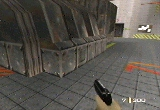
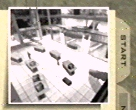
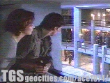
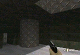
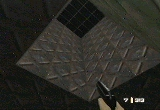

|
.
| Goldeneye
Version Beta : Control |
| Pour
commencer, une Image au Dos de la Boite de Goldeneye. Analyse rapide
! Un Janus Special Force, du Sang, la Machine qui change de Teinte
et de Texture, et la Porte tout au fond qui a changé d'allure
! |


Ci-dessous,
le Pic de la Mission, ou les Vitres manquent. A coté, une Image
du Film que j'aime bien. La ressemblance est agréable ! |


Enfin, il y a un Petit Mystère concernant le Puit d’Aération où on trouve un Gilet dans la Salle Principale : C’est l’Endroit par lequel James et Natalya arrivent dans le Film ! Seulement, si on commence la Mission ici, le Niveau aurait été trop court… Donc Rare a créé une autre Entrée. |

